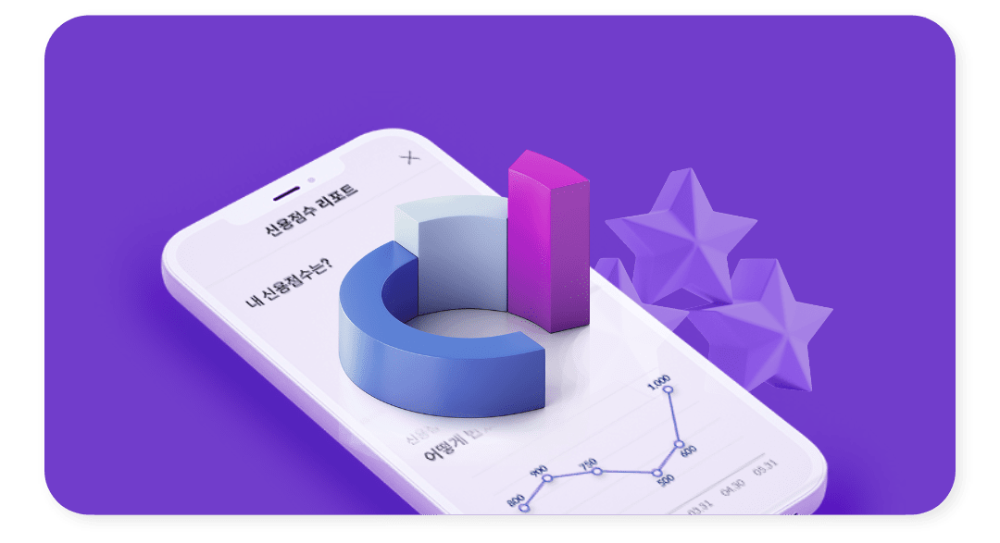

신용#신용관리팁
신용점수를 조회하면 좋은 점
- 내 신용점수를 조회하면 그동안의 대출 및 카드 등 전반적인 금융생활 점검이 가능합니다.
- 어떤 사유로 신용이 오르고 내렸는지 확인가능하며, 미래 재무 계획을 세우는 데에 도움됩니다.
- 현재 신용점수가 낮은 경우, 신용점수가 높은 사람에 비해 대출 시 더 많은 대출이자를 지불해야하므로 신용관리에 더욱 신경써야 합니다.
- 일정 점수 이하의 경우는 대출이 제한될 수 있습니다. 또한, 신용카드 발급 시 신용이 낮으면 한도 등에 제한을 받으며 KCB 신용점수 576점 미만인 경우 카드 발급이 거절될 수 있습니다.
연체된 채무가 감당이 안될 때 도움받는 방법
- 연체상황을 방치하면 연체가산이자가 부과되어 연체금이 급격하게 증가할 수 있습니다. 만약 상환 가능한 소득이 있다면 신용회복위원회 채무조정 또는 법원 개인회생 제도를 통해 연체된 채무를 정리할 수 있습니다.
- 두 제도는 채무 일부를 감면한 뒤 매월 일정금액을 분활 상환하는 방식으로 진행됩니다. 다만, 조금씩 차이가 있기 때문에 자세한 내용을 확인하여 본인에게 유리한 제도를 선택하시길 바랍니다.
- 또한 제도 선택 전 종합상담을 통해서도 자세한 상담이 가능하니 참고 부탁 드립니다.
- [신용회복위원회]
홈페이지 : https://www.ccrs.or.kr/main.do
상담전화 : 1600-5500
한국신용정보원 채무불이행 정보의 경우 연체금을 모두 상환하면 기록이 바로 삭제될까?
- 신용카드 대금이나 대출 등의 연체금을 모두 상환해도 한국신용정보원 신용정보관리규약에 따라 연체기록을 일정 기간 보존하게 되어있습니다.
연체기록은 완납하여 해제된 연체정보의 등록금액이 일정금액(대출금 1천만원, 신용카드 대금 5백만원)을 초과할 경우 연체한 기간만큼 최장 1년간 기록이 보존됩니다. - 단, 아래와 같은 경우에는 연체와 동시에 연체 기록이 삭제됩니다.
-
- 대출 : 연체가 등록된 날로부터 90일 이내에 연체가 해제되거나, 연체로 등록된 금액이 1천만원 이하인 경우
- 신용카드/카드론/할부금융 : 연체가 등록된 날로부터 90일 이내에 연체가 해제되거나, 연체로 등록된 금액이 5백만원 이하인 경우
신용카드 발급이 가능한 신용점수 기준
- 그동안 신용점수 6등급 이상에게만 발급되었으나, 올해부터 신용점수제로 전환됨에 따라 KCB 신용점수 576점 이상부터 신용카드 발급이 가능합니다.
- 각 카드사별로 심사기준은 다를 수 있으므로 참고바랍니다.
- * 개인신용평점 상위 93% 또는 장기연체가능성 0.65% 이하
신용카드 한도 선정 기준
- 카드사는 보통 고객의 신용도를 평가하고 그에 따라 이용금액을 추산합니다.
- 고객의 연령, 직업, 이용 및 연체 현황, 소득, 자산 등의 정보를 취합해 신용도를 정하고, 이용 한도는 고객이 요청한 한도 금액과 내부 심사기준을 종합해 산정됩니다.
- 보통 신용카드 발급 신청서에는 요청한도를 기입할 수 있는데 카드사 측에 의견을 제시하는 것 정도이기 때문에 100% 반영되지는 않습니다.
- 또한 매년 1회 이상 고객들의 이용한도를 재평가하고, 한도를 조절할 필요가 있다고 판단되면 조정절차를 밟게 되므로 카드 대금을 연체 없이 잘 납부하시길 바랍니다.
신용관리에 좋은 습관
- 1) 연체는 금물
- 통장 잔고를 수시로 체크하고, 신용카드 선결제 등으로 혹시 모를 연체에 대비하면 좋습니다.
- 2) 수시로 신용점수를 확인
- 신용도에 따라 금리와 한도가 달라질 수 있음을 인지하고 신용 하락 시 사유를 확인해 곧장 대응해야합니다.
- 3) 체크카드의 꾸준한 사용
- 체크카드를 월 30만원 이상 6개월 이상 혹은 6~12개월 동안 꾸준히 사용할 경우 신용에 긍정적입니다.
신용관리에 나쁜 습관
- 1) 소액 연체는 신경쓰지 않는다
- 기존 연체이력이 있는 경우 10만원 이상 5영업일 이상 연체, 연체이력이 없는 경우 30만원 이상 30영업일 연체하는 경우 신용하락의 원인이므로, 소액 연체라도 신경써야 합니다.
- 2) 카드론, 현금서비스를 자주 이용한다
- 카드론과 현금서비스는 보통 이자율이 더 높아서 연체 가능성이 높아집니다. 좀 더 이자가 싼 제1금융권 대출을 최우선으로 고려해야합니다.
- 3) 마이너스통장과 신용카드 한도를 꽉 채워서 사용한다
- 한도를 꽉 채워 쓰게 되면 자신의 상환능력을 벗어나게 되어 연체 가능성을 높이므로 주의가 필요합니다.
신용점수에 도움되는 금융생활
- 대출금을 연체없이 성실하게 상환하기
- 신용/체크 카드를 연체없이 잘 갚고 꾸준히 사용하기
- 연체가 있으면 추가로 연체되지 않게 주의하기
- 연체가 여러 건이 있는 경우, 연체금액보단 기간이 오래된 장기연체를 먼저 상환하기
신용점수를 바로 올리는 방법
- 비금융정보인 건강보험, 국민연금, 통신요금, 공공요금, 국세청의 6개월 이상 성실하게 납부한 실적으로 신용점수에 가점을 받을 수 있습니다.
- 장기간 비금융정보를 성실하게 납부하신 경우, 그 정보들을 신용평가회사에 제출하시면 됩니다.
- KCB 올크레딧 홈페이지 등록, 앱 간편 등록, 우편, FAX, 방문의 방법으로 제출이 가능합니다.
사회초년생이 신용점수를 올리는 방법
- 사회초년생의 경우 금융거래 이력이 부족해서 낮은 신용점수를 받을 수 있는데요.
- 첫째, 비금융정보의 활용을 권해 드립니다.
신용점수에는 금융거래뿐만 아니라 비금융정보도 영향을 미치고 있습니다. 비금융정보에는 통신요금, 건강보험료, 국민연금 등이 있습니다.
비금융정보는 신용평가회사에서 등록이 가능합니다. - 둘째, 이외에도 학자금 대출상환, 햇살론 등과 같은 서민금융대출프로그램을 1년 이상 성실 상환 시 가산점이 적용됩니다.
한국장학재단으로부터 받은 학자금 대출을 연체 없이 1년 이상 성실하게 상환하는 경우, 5∼45점의 가점을 받을 수 있습니다. 대출현황 및 상환수준에 따라 가점이 부여되며, 일반대출 없이 학자금 대출만 있는 경우 최대 45점까지 가점을 받을 수 있습니다. - 셋째, 체크카드를 매달 30만원 이상 6개월 동안 사용하거나, 6~12개월 동안 지속적으로 사용할 경우 신용에 가점을 받을 수 있습니다.
- 외에도 주기적으로 신용상태를 확인하고, 공과금/핸드폰요금 연체하지 않기, 자동이체로 연체 예방하기, 꾸준한 거래내역 쌓는 것으로 신용관리의 초석을 다질수 있음을 명심하시길 바랍니다.
신용카드를 현명하게 쓰는 방법
- 신용카드를 올바르게 사용하면 개인 신용관리에 도움이 됩니다. 하지만 잘못된 방법으로 남용하면 오히려 신용도가 떨어지므로 주의해서 사용해야합니다.
- 1) 결제대금을 연체하지 않는 것이 우선입니다.
- 2) 할부보다 일시불 결제 위주로 사용합니다.
- 3) 한도는 널널하게 유지하며 사용하면 좋습니다.
- 4) 장단기 연체 발생확률이 높은 현금서비스나 카드론의 사용은 지양합니다.
- 5) 꾸준히 사용하여 소액이라도 거래기간을 오랫동안 유지합니다.
대출이자율을 낮추는 방법
- 각 금융사가 규정하고 있는 조건에 맞는 자격이 된다면, 기존 이용하고 있는 대출의 금리를 낮춰달라고 요구할 수 있습니다.
- 이때 이 권리를 '금리인하요구권'이라고 합니다.
- 보통 취업, 승진, 소득과 재산이 증가되거나 신용점수가 개선되었을 때 요구 가능합니다.
- 해당 금융사 영업점 또는 인터넷 홈페이지 등을 방문하여 금리인하 신청서, 재직증명서, 근로소득원천징수영수증 및 신용상태 개선 증빙자료 등을 제출하여 금리인하를 요구하시면 됩니다. 해당 금융회사에서 신청접수일로부터 10일 이내 결과 및 사유를 전화, 서면, 문자메시지, 이메일, 팩스 등의 방법으로 안내해 줄 것입니다.
- 신청 처리 및 프로세스 및 금리인하 수용 여부는 금융회사마다 상이할 수 있으니 유의해주시길 바랍니다.
연체 없이 잘 상환해도 신용점수가 올라가지 않는 이유
- 신용평가는 현재가 아닌 미래 시점에 연체가 발생할 가능성을 점수로 나타낸 것입니다.
- 현재 연체 이력이 없더라도, 부채 수준, 신용거래 기간, 신용거래 형태 등을 전반적으로 평가하기 때문에 신용점수가 바로 올라가지 않을 수 있습니다.
- 하지만 성실한 상환이력이 누적되면 시간이 지나 점수가 오를 수 있으니 앞으로도 꾸준히 대출금을 상환하시길 바랍니다.
대출 여러 건일 때 신용에 좋은 상환 순서
- 가장 금리가 높은 대출부터 갚은 후, 원금 없이 이자만 갚는 대출은 가장 나중에 갚는 것을 권장합니다.
- 일반적으로 제1금융권을 제외하고 금리가 높은 순서는 대부업체 > 현금서비스, 카드론 > 자동차 할부 > 마이너스 통장 순서입니다.
- 참고로 마이너스 통장의 경우, 한도에 따라 자유롭게 사용할 수 있도록 설정되어 있어 조기상환 수수료가 없습니다.
- 반면, 자동차할부는 카드론과 비슷한 형태입니다. 그러므로 마이너스통장과 자동차할부 두 개가 있다면, 자동차할부를 먼저 갚는 것을 권해 드립니다.
개인신용회복과 개인파산의 차이점
- 개인신용회복은 채무조정의 기회를 주는 제도입니다.
- 여러 금융기관에 채무가 있는 다중 채무자들에게 신용회복위원회와 협약을 체결한 금융기관을 주축으로 한 일부 채무감면, 장기분할상환, 상환유예 등의 방법으로 채무를 갚을 기회를 주는 것입니다.
- 반면, 개인파산이란 자신의 전 재산으로도 채무를 갚을 수 없을 경우일 때 법원에 도움을 요청하는 제도입니다. 개인파산의 신청자격은 아래와 같습니다.
- *건강이 좋지 않아 빚을 갚을 수 없는 경우
- *재산보다 빚이 많은 경우
- *채무가 천만 원 이상인 경우
- *소득이 적거나 가족구성원 수 비례 최저 생계비보다 적은 경우
- *신용불량자인 경우
- *꾸준한 수입이 없을 경우
- *최근 5년 이내에 처분한 재산이 있어 증명 가능한 경우에 해당됩니다.
프리워크아웃 제도와 신용의 관계
- 프리워크아웃 제도는 금융위원회에서 지원하는 신용회복지원제도 중 하나입니다. 채무 조정이 필요한 채무자를 대상으로 연체이자 전액 감면, 이자율 인하, 상환기간 연장 등으로 금융채무 불이행자로 전락하지 않도록 지원합니다. 연체기간이 90일 이내이며, 총 채무액이 15억 원 이하라면 지원할 수 있습니다.
- 연체를 하는 것보다 프리워크아웃을 이용해 연체를 막는 것이 신용에는 더 유리합니다. 운영이 어려워져 대출 상환이 연체될 경우, 밀린 연체금을 모두 상환할 때까지는 신용점수가 낮아질 수 있기 때문입니다.
- 프리워크아웃 신청은 개인 신용점수에 반영되지 않지만, 상황에 따라 추가로 대출을 받거나 신용카드 사용 등이 제한될 수 있습니다. 그러므로 연체 위기에 놓였다면, 프리워크아웃을 신청하는 것이 낫다고 볼 수 있습니다.
신용회복중인 자의 성실상환자 카드(소액신용자 카드) 신청 방법
- 채무조정을 성실하게 갚더라도 신용점수 등의 영향으로 신용카드 발급이 제한되는 경우가 있습니다.
- 이러한 불편을 개선하고고자, 소액신용카드(성실상환자 카드)는 채무조정을 성실히 변제하신 분들이 금융생활이 편리하도록 신용카드사와 제휴, 소액신용카드(성실상환자 카드)를 발급받을 수 있도록 하는 제도입니다. 카드의 사용한도는 최초 50만 원 이내에서 결정되며, 현금서비스는 사용할 수 없습니다. 현금서비스를 제외한 모든 기능은 신용카드와 동일합니다.
- 소액신용카드(성실상환자 카드)는 채무조정 확정 후 월 변제액(원금기준)을 24개월 이상 상환하고 신청일 현재 미납이 없는 경우 신청이 가능합니다. 만약 재조정을 한 경우에는 재조정 후에 원금을 12개월 이상 상환해야 하고, 행복기금 등에 함께 채무조정 중인 경우에는 행복기금 등도 12개월 이상 변제해야 합니다. 또한, 채무조정 변제계획을 완료한 경우에도 신청 할 수 있습니다.